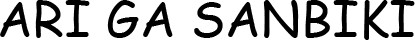
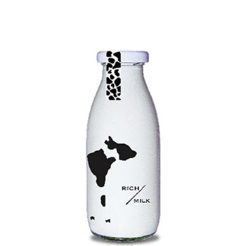

About
Photo
Contact
Work

牛乳瓶デザイン
ロゴマークと瓶のデザインを手掛けました。ターゲットは若い女性です。
ロゴマークはスタイリッシュかつシンプルに仕上げ、全体をモノクロでデザインし統一感を表現しました。牛乳を飲み干しても写真映えするように、瓶は黒いシルエットのみをデザインし空にかざしてもらうなどの写真映えで、SNSからの知名度の向上を目指します。蓋のシールは牛柄にして、牛らしさ、牛乳らしさを表現しました。
一覧に戻る